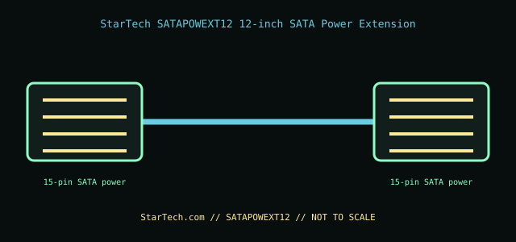

[ INTERNAL PC POWER CABLE // MODEL-SPECIFIC RECORD ]
StarTech SATAPOWEXT12 12-inch SATA Power Extension
StarTech.com manufacturer part SATAPOWEXT12. This record documents only this specified cable assembly; connector fit is not evidence of a matching pinout or PSU compatibility.

PSU SAFETY: Modular PSU-side cable pinouts are proprietary and model-family-specific. Never substitute a modular cable by brand, connector fit, color, or appearance; use only the exact PSU maker-approved cable for the exact PSU model and revision.
Manufacturer specifications
| Manufacturer part | StarTech.com SATAPOWEXT12 |
|---|---|
| Connector / pin count | One 15-contact SATA power plug to one 15-contact SATA power receptacle. |
| Wire gauge / length | 18 AWG; 12 in (304.8 mm). |
| Compatible PSU family | Standard SATA power device-end connector on an ATX PSU lead, for SATA drives/peripherals. A modular PSU must retain its own manufacturer-approved SATA harness; this extension connects at the standard drive-end SATA plug and is not a substitute for or interchangeably wired PSU-side cable. |
Power and safety caveats
For SATA-powered devices within the PSU, original harness, and connector ratings. Do not overload a single daisy-chain or infer power capability from connector fit. Check for melted housings, discoloration, loose contacts, or damaged insulation.
Case clearance and routing
The 12 in length is the extension body. Measure the drive-bay route, account for the plug latch and bend space, and keep the cable clear of drive rails, fans, sharp cutouts, and side-panel compression.
Manufacturer specifications and manuals
- StarTech.com — SATAPOWEXT12 product pageManufacturer SKU and SATA power extension product information.
- StarTech.com — SATAPOWEXT12 datasheet (PDF)Manufacturer technical sheet for 15-pin SATA power ends, 12-inch length, and wire gauge.
Use current manufacturer documentation for exact model revisions and installation. This archive illustration is a connector-identification schematic, not an electrical pinout.